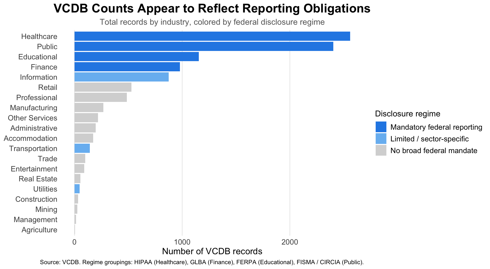
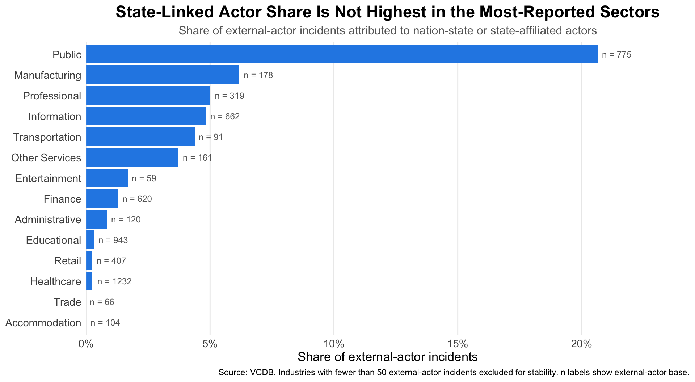
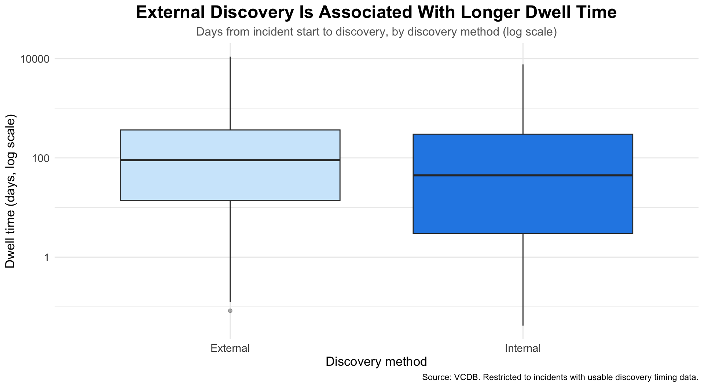

The Dataset Is Not a Mirror
Public cybersecurity breach data is often treated as a window onto where attacks happen. This post pushes back on that framing. Using the VERIS Community Database (VCDB) – a publicly available repository of 10,586 reported cybersecurity incidents – I argue that what the data shows is not simply where attacks occur. It shows where incidents are reported, discovered, and made visible.
Two forces drive this gap. The first is legal: federal disclosure mandates push certain industries into the public record far more than others. The second is operational: incidents must be discovered before they can be reported, and many organizations rely on outside parties to find them.
The Reporting Gap
Does the public record reflect reporting obligations?
The industries that dominate VCDB are not arbitrary. Healthcare, Finance, Education, and the Public sector – the four highest-count industries – all operate under broad federal disclosure mandates (HIPAA, GLBA, FERPA, FISMA/CIRCIA). Agriculture, Mining, Construction, and Manufacturing face no equivalent federal obligation and contribute very few records.
To make this visible, I joined a hand-built disclosure-regime lookup onto the industry counts and colored each bar accordingly.
The four highest-count industries all sit under broad federal disclosure mandates. Industries with no broad federal mandate cluster at the bottom. The pattern is consistent enough to suggest that VCDB counts reflect the legal architecture of disclosure as much as the actual distribution of attacks. This does not mean low-count sectors are attacked less – it means the public record is shaped, in part, by who is required to report.
Does low record volume mean low strategic risk?
If volume tracked threat, the most-reported sectors should also be the ones attracting the most sophisticated adversaries. The actor-type breakdown complicates that assumption. For each industry, I compute the share of external-actor incidents attributed to nation-state or state-affiliated actors, dropping industries with fewer than 50 external-actor incidents to avoid unstable proportions.

Manufacturing, Professional services, and Information all show meaningful shares of state-linked external-actor activity despite contributing far fewer total records than Healthcare or Finance. Healthcare and Educational – which dominate the raw counts – have notably small state-linked shares. The careful interpretation is that strategic risk and public record volume do not move together cleanly. Some sectors that look quiet in VCDB still show meaningful state-linked activity among the records that do exist – which is consistent with those sectors being under-visible rather than simply under-attacked.
The Detection Gap
Before an incident can enter the public record, it has to be discovered. Discovery is uneven, and how an incident is found turns out to matter a great deal for how long it goes unnoticed. I construct dwell time – days from incident start to discovery – from the VCDB timeline columns, converting all units to days. Because dwell time is heavily right-skewed, the y-axis is plotted on a log scale.

On a log scale, the median dwell time for externally discovered incidents sits well above the median for internally discovered ones – the gap spans a meaningful portion of the axis, meaning typical external discoveries take orders of magnitude longer in raw days. The chart does not prove that external discovery causes longer dwell time; some of the gap likely reflects selection, since incidents that go undetected long enough are also more likely to eventually surface through outside channels. What it does support is the core claim: when an organization does not catch its own incidents, those incidents tend to remain active much longer.
Takeaway
Across three visualizations, the same pattern holds. Legal disclosure obligations concentrate certain industries in the public record. Several lower-volume industries still show meaningful shares of state-linked adversary activity. And when organizations fail to detect their own incidents, those incidents stay active substantially longer before anyone notices.
The practical implication is narrow but important: low public record volume in a sector is not a clean signal of low strategic risk. It may instead reflect a sector that has limited legal incentive to disclose and limited capacity to self-detect – the two forces this post describes.
Limitations
VCDB captures what gets reported, not what happens. The disclosure-regime categories are constructed groupings based on broad federal mandates and do not capture state-level notification laws or enforcement variation. Actor-type coding may be incomplete or unevenly applied across incidents. The dwell-time analysis covers only the small subset of rows with usable discovery timing data, which may not be representative. All findings are observational – the analysis does not control for organization size, incident severity, or year.
Citations
[1] H. Wickham and G. Grolemund, “10 Tibbles,” R for Data Science. https://r4ds.had.co.nz/tibbles.html
[2] Z. Bobbitt, “How to Use str_trim in R (With Examples),” Statology, Jul. 14, 2022. https://www.statology.org/str_trim-in-r/
[3] Z. Bobbitt, “How to Use the replace_na Function in R,” Statology, Apr. 25, 2024. https://www.statology.org/r-replace_na/
[4] C. Scherer, “A Quick How-to on Labelling Bar Graphs in ggplot2,” Jul. 05, 2021. https://www.cedricscherer.com/2021/07/05/a-quick-how-to-on-labelling-bar-graphs-in-ggplot2/
[5] “Y-axis scale as percent in ggplot,” Stack Overflow, Aug. 12, 2022. https://stackoverflow.com/questions/73330919/y-axis-scale-as-percent-in-ggplot
[6] C. O. Wilke, “Coordinate systems and axes,” DSC 385. https://wilkelab.org/DSC385/worksheets/coordinate-systems-axes.html